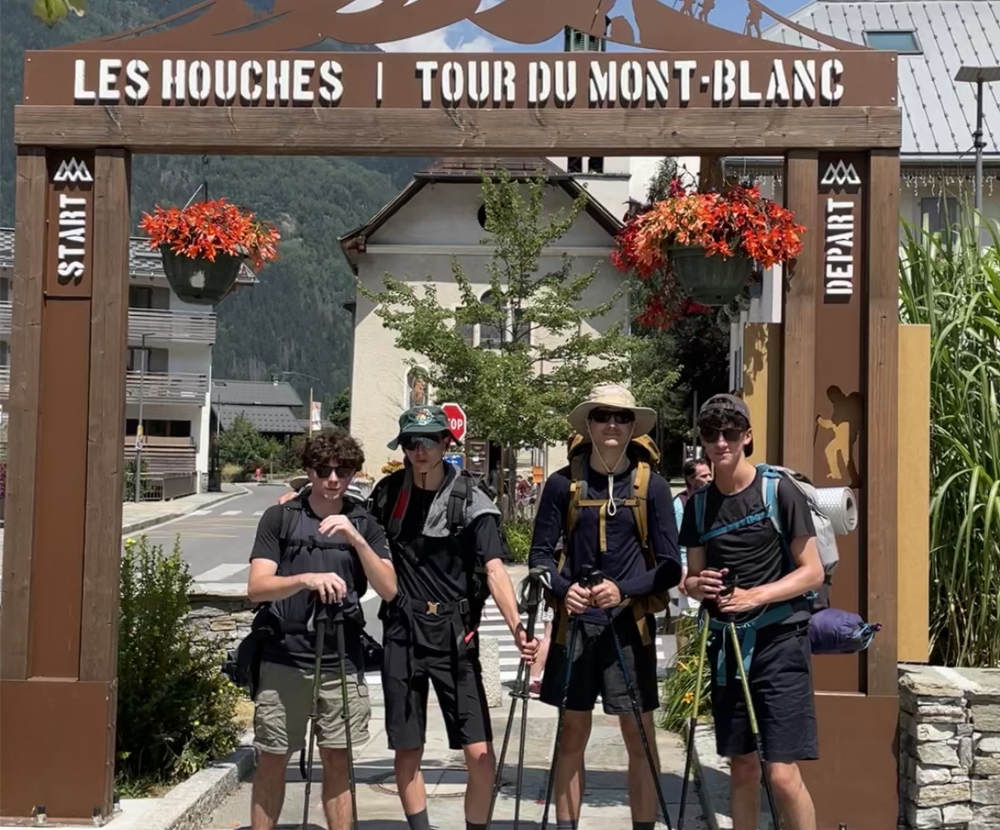
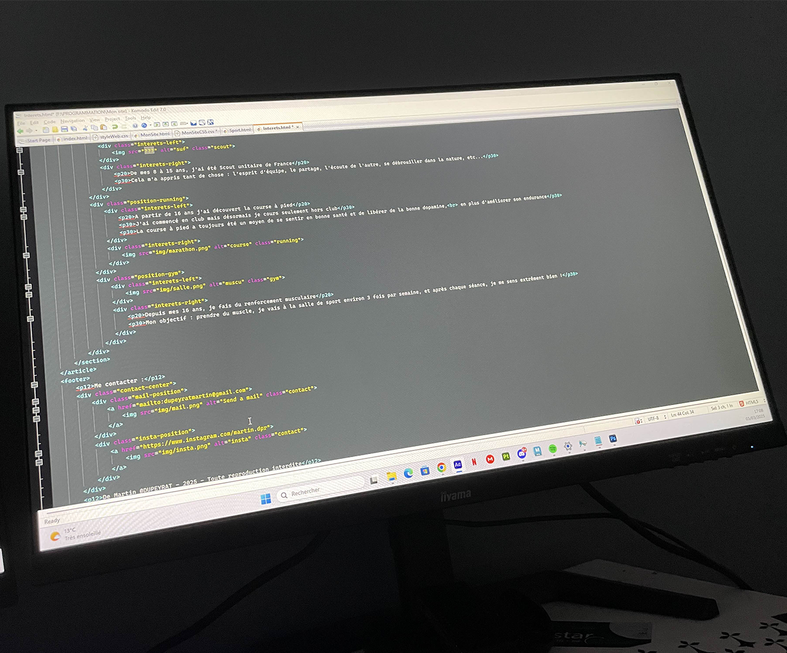
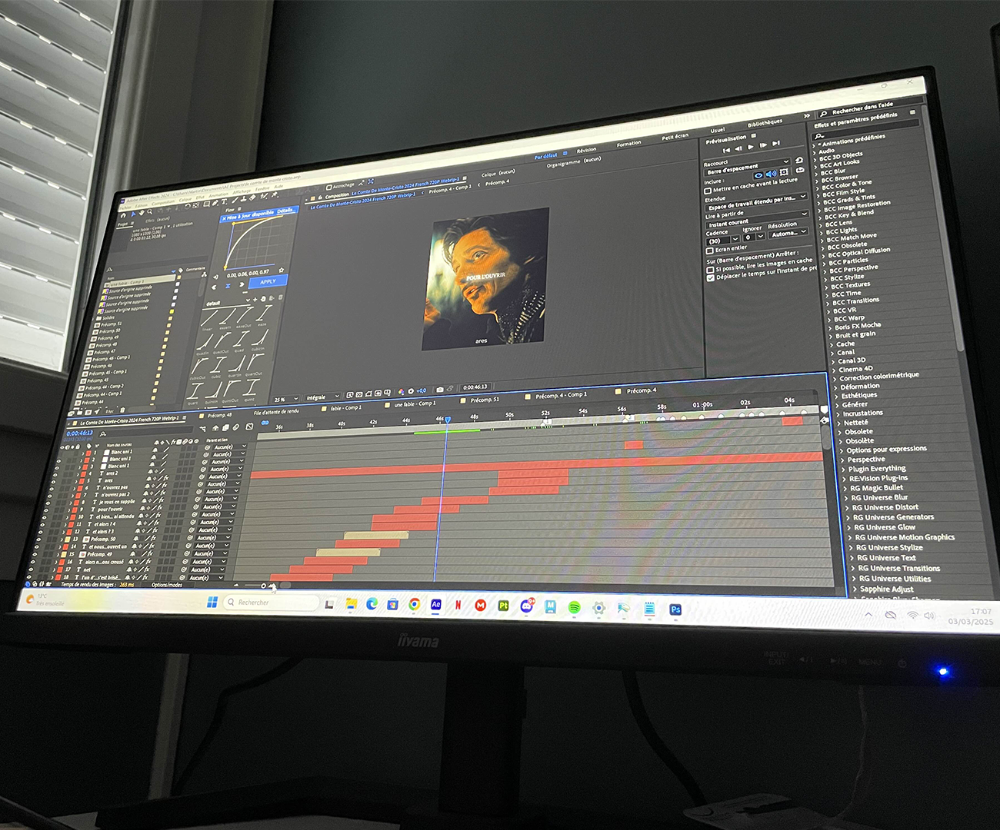
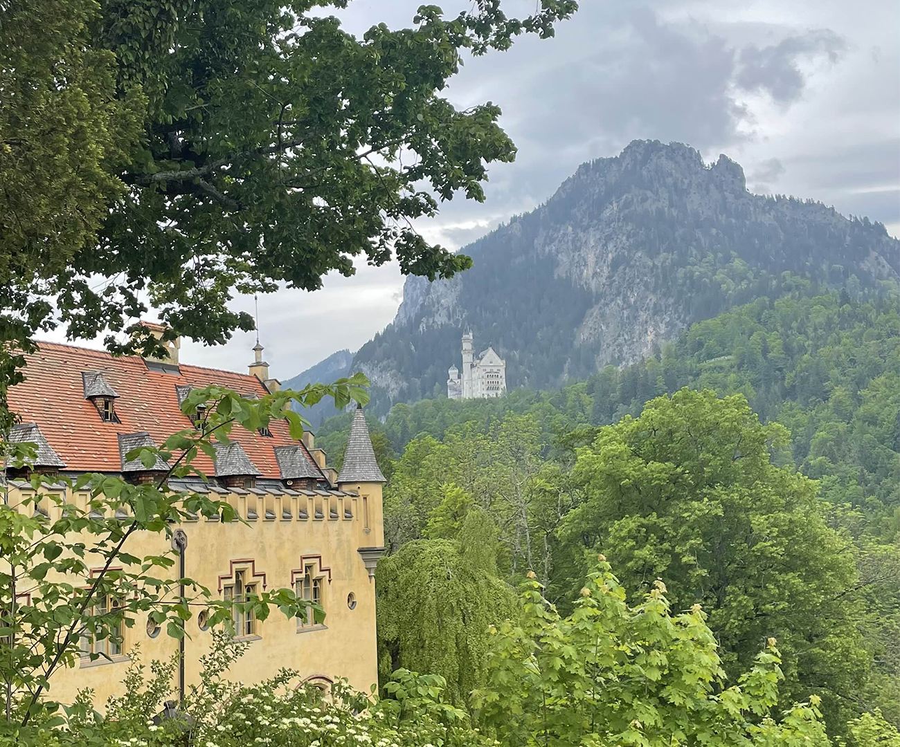
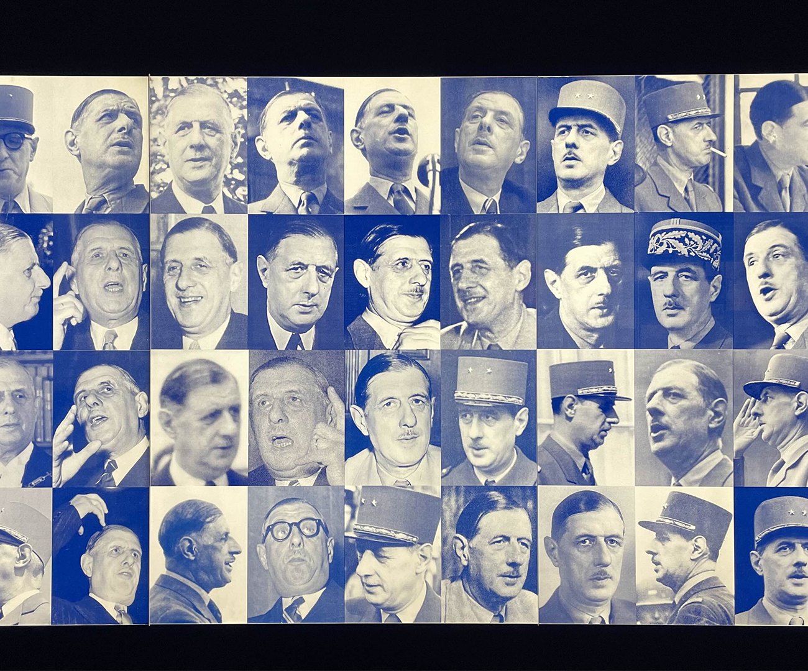

INTERETS
Ci dessous, vous découvrirez mes centres d'intêrets !

Tour du Mont-Blanc réalisé avec 3 amis - Juillet 2024.

Programmation de mon site web - Février/Mars 2025

Montage sur le film : Le Comte de Monte-Cristo - Novembre 2024

Photo prise au château de Neuschwanstein, en Allemagne - Mai 2024

Photo prise au Musée des Invalides, là où est exposé l'histoire du Général de Gaulle - Janvier 2025